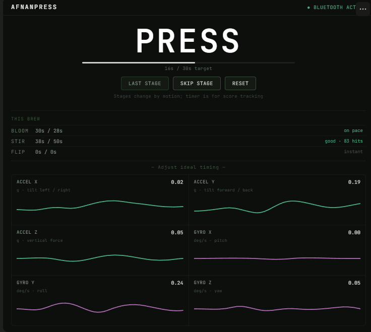

The device recognises four sequential stages. Each one is triggered differently depending on what the motion looks like.
Hardware setup, ML pipeline, BLE protocol, and live brew coaching in action.
Raw ML predictions are never acted on directly. A sequence gate in firmware enforces the expected brew order. the model can output "stir" fifty times during bloom and nothing moves.
On top of that, gyroscope edge-hit counting handles stir detection, spike-then-flat logic handles the flip, and a 90-second auto-skip prevents stuck stages during real brews. The deterministic rules cover what the model finds ambiguous.
Served directly from the ESP32 at its local IP. Live IMU graphs for all six axes, per-stage pace timers benchmarked against your ideal brew, BLE command buttons, and a 1-3 end-of-brew score. Styled with Fraunces and JetBrains Mono. because even microcontroller dashboards deserve taste.
